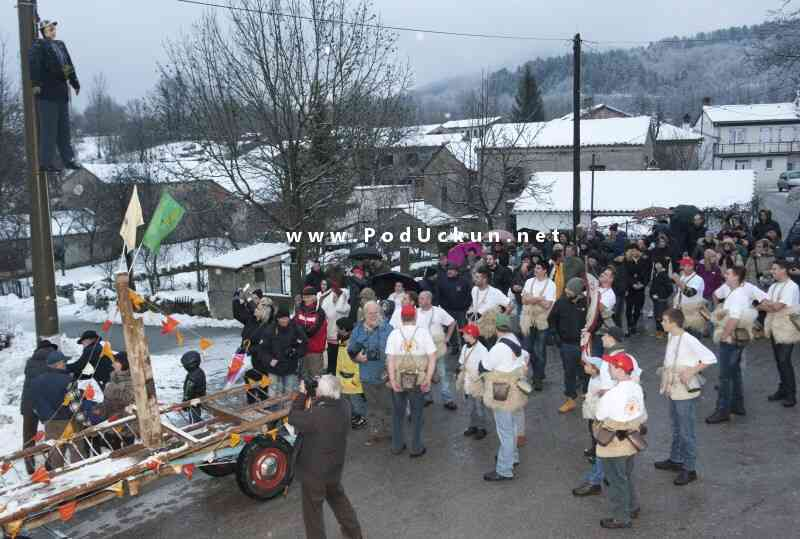
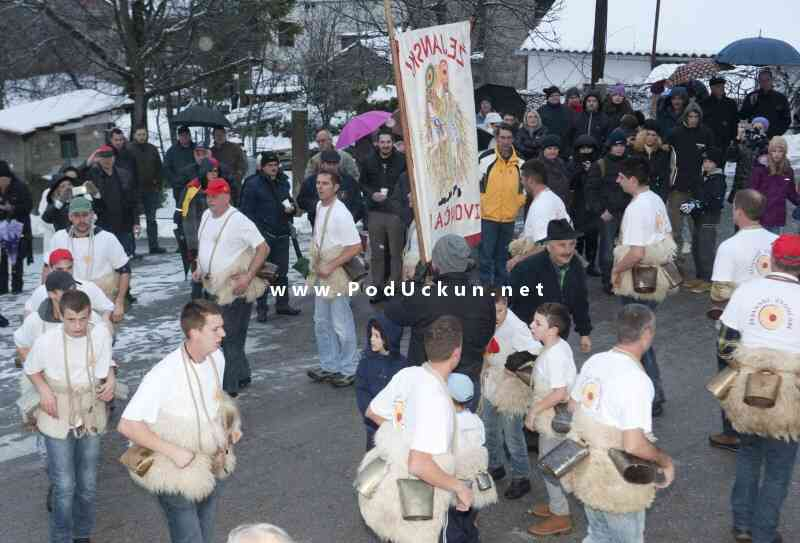
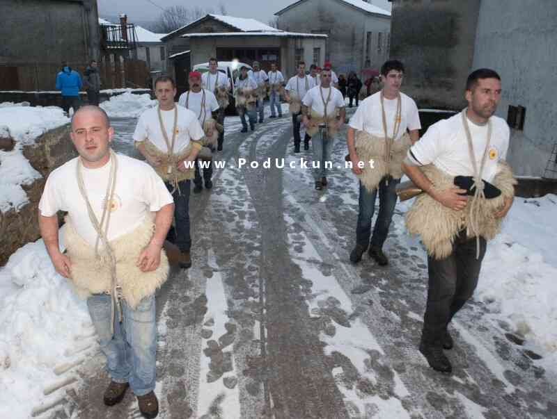
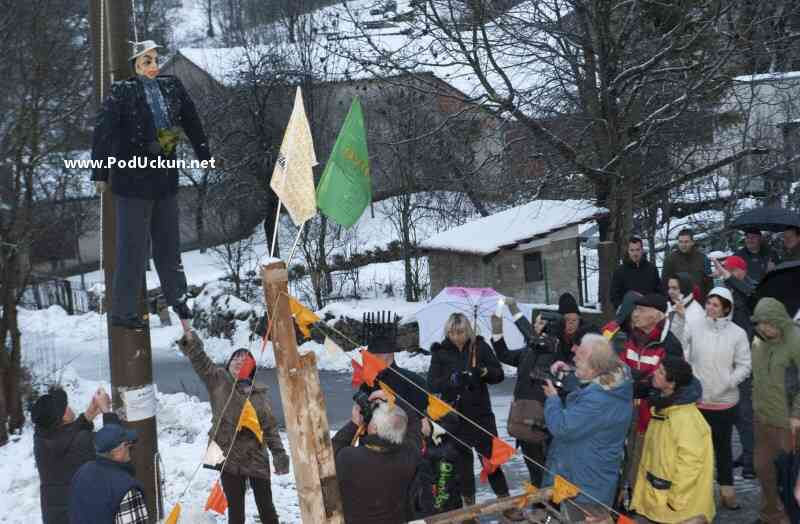

Žejane – Prva pusna zvona ove sezone čula su se, već po tradiciji, na Žejanama, gdje su u prvim minutama blagdana Sveta Tri kralja zvončari napravili tri kruga oko sela, po jedan za svakoga mudraca. Kao što su zvončari kružili oko mjesta, tako je i bukaleta sa črnim vinom kružila iz ruke u ruku, jer poznata je uzrečica da "koliko črnega vina na Tri kralja popiješ, toliko nove krvi dobiješ".

Nakon "noćnog đira" posvećena trojici biblijskih kraljeva čiji se blagdan obilježava 6. siječnja, pusna fešta u Žejanama nastavljena je u poslijepodnevnim satima, kada je uz brojne goste i posjetitelje na pal podignut prvi ovogodišnji Pust.

Uz politička zbivanja koja su obilježila nacionalnu, ali i lokalnu scenu, ime Pusta očekivano je bilo vezano uz "drugi najstariji zanat na svijetu".

Žejanski Pust tako je nazvan "Ćaća se vraća", po već poznatoj sintagmi vezanoj uz bivšeg premijera Ivu Sanadera čije je suđenje bilo jedan od najvažnijih prošlogodišnjih događaja, a svoj su izbor Žejanci obrazložili argumentom da će, kada se vrati, ćaća srediti i situaciju u Matuljima.

Davor Žic
January 7, 2016
© 2016 Liburnija